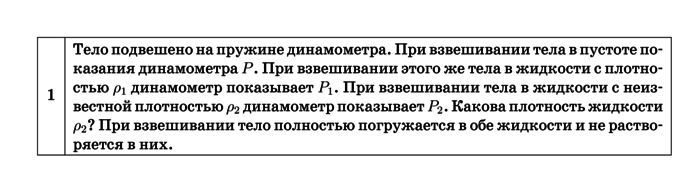
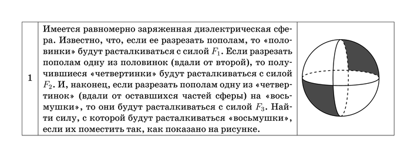
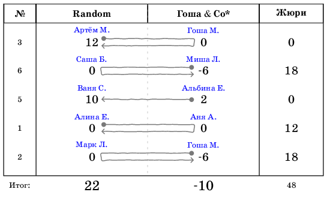
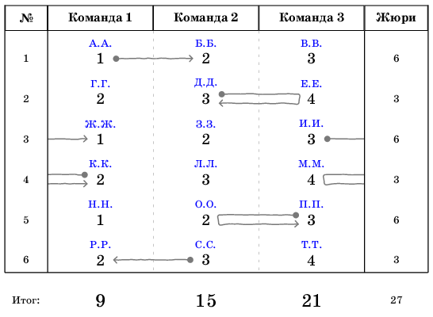

TeX’нические пояснения
Составление задач.
Задачи оформляются двумя командами: \task{условие задачи} и
\taskpic[ширина картинки]{условие задачи}{картинка}. Если вы хотите
поместить задачу без картинки, используйте первую команду, если с
картинкой — вторую.
Обе эти команды описаны в файле task-is.tex. Подключите его, чтобы ими
воспользоваться (\input{task-is} в преамбуле).
Образец кода для задачи без картинки:
\task{ Тело подвешено на пружине динамометра. При взвешивании тела в пустоте показания динамометра $P$. При взвешивании этого же тела в жидкости с плотностью $\rho_1$ динамометр показывает $P_1$. При взвешивании тела в жидкости с неизвестной плотностью $\rho_2$ динамометр показывает $P_2$. Какова плотность жидкости $\rho_2$? При взвешивании тело полностью погружается в обе жидкости и не растворяется в них. }

Картинка к задаче рисуется с помощью tikz (см. тут для примеров с
кодом). Код для картинки включается во второй аргумент команды
\taskpic. Включение пакета tikz и всех необходимых библиотек и
стилей описано в файле tikz-is.tex, включите его в преамбулу командой
\input{tikz-is}.
Если вы не владеете tikz’ом, то можно вставить уже нарисованную в
чём-нибудь картинку командой \includegraphics (не
рекомендуется). Картинка должна быть в формате pdf.
По умолчанию, ширина картинки равна 4 см, но вы можете установить ту ширину, которая вам нужна. Если вы хотите оставить ширину 4 см, просто пропустите первый аргумент в команде.
Таким образом, образец кода для задачи с картинкой выглядит так:
\taskpic{ Имеется равномерно заряженная диэлектрическая сфера. Известно, что, если ее разрезать пополам, то <<половинки>> будут расталкиваться с силой $F_1$. Если разрезать пополам одну из половинок (вдали от второй), то получившиеся <<четвертинки>> будут расталкиваться с силой $F_2$. И, наконец, если разрезать пополам одну из <<четвертинок>> (вдали от оставшихся частей сферы) на <<восьмушки>>, то они будут расталкиваться с силой $F_3$. Найти силу, с которой будут расталкиваться <<восьмушки>>, если их поместить так, как показано на рисунке. } { \begin{tikzpicture} \def\size{50pt} \draw [white,fill = gray] (0,0) -- (\size, 0) arc (0:90:\size) -- cycle; \draw [white,fill = gray] (0,0) -- (-\size, 0) arc (180:270:\size) -- cycle; \fill [fill = white] (0, \size) arc (90:270:\size / 5 and \size); \fill [fill = white, dashed] (0, -\size) arc (-90:90:\size / 5 and \size); \draw [fill = white, dashed,thick] (\size, 0) arc (0:180:50pt and \size / 5); \draw [fill = white,thick] (-\size, 0) arc (180:360:50pt and \size / 5); \draw [thick] (0, \size) arc (90:270:\size / 5 and \size); \draw [dashed,thick] (0, -\size) arc (-90:90:\size / 5 and \size); \draw[thick] (0, 0) circle (\size); \end{tikzpicture} }

Если на листочке размещено несколько задач, то они будут соответственно пронумернованы.
Протокол физбоя.
Для составления протокола физбоя используется несколько команд,
которые собраны в файле battle-is.tex (он подключает пакет tikz).
Протокол физбоя оформляется в окружении tikzpicture. Таким образом,
сначала нужно сделать это окружение:
\begin{tikzpicture} \end{tikzpicture}
Двойной физбой.
Разберём теперь случай двойного физбоя. В окружении следует написать
\pdtitle{#1}{#2}, где #1 — название первой команды, #2 — название
второй команды. Это сформирует шапку протокола.
Каждый вызов оформляется командой
\pdcall{#1}{#2}{#3}{#4}{#5}{#6}. Её аргументы:
- #1: направление вызова. Здесь может быть четыре варианта:
->(команда 1 вызывает команду 2);<-(команда 2 вызывает команду 1);->|(команда 1 вызывает команду 2, но получает проверку корректности);|<-(команда 2 вызывает команду 1, но получает проверку корректности); - #2: номер задачи;
- #3: баллы команды 1;
- #4: баллы команды 2;
- #5: имя участника со стороны команды 1;
- #6: имя участника со стороны команды 2.
Итоги физбоя оформляются командой \pdsum{#1}{#2}{#3}. Аргументы:
- #1: баллы команды 1;
- #2: баллы команды 2;
- #3: баллы жюри.
Итоговый код одного физбоя будет выглядеть так:
\begin{tikzpicture} \pdtitle{Random}{Гоша \& Co*} \pdcall{->|}{3}{12}{0}{Артём М.}{Гоша М.}; \pdcall{|<-}{6}{0}{-6}{Саша Б.}{Миша Л.}; \pdcall{<-}{5}{10}{2}{Ваня С.}{Альбина Е.}; \pdcall{->|}{1}{0}{0}{Алина Е.}{Аня А.}; \pdcall{|<-}{2}{0}{-6}{Марк Л.}{Гоша М.}; \pdsum{22}{-10}{48}; \end{tikzpicture}
А сам протокол — так (реальный физбой, прошедший в физлагере в 2010 году в 10 классе):

Тройной физбой.
Тоже пишется в окружении tikzpicture. Команда для создания шапки:
\pttitle{#1}{#2}{#3}, где #1, #2, #3 — названия 1, 2, 3-й команд
соответственно.
В тройном физбое порядок вызовов фиксирован (см. правила), поэтому
расстановка стрелок вызова зависит только от того, есть проверка
корректности или нет. В соответствии с этим команда вызова устроена
так: \ptcall{#1}{#2}{#3}{#4}{#5}{#6}{#7}{#8}:
- #1: если проверка корректности есть, можно написать любую букву; если нет — оставить аргумент пустым, т.е. {};
- #2: номер задачи;
- #3, #4, #5: баллы 1, 2, 3-й команды соответственно;
- #6, #7, #8: участники 1, 2, 3-й команды соответственно.
Разумно в шапке расставлять команды так, как устроен порядок вызовов.
Подведение итогов оформляется так же, как и в случае двойного физбоя:
\ptsum{#1}{#2}{#3}{#4}, где #1, #2, #3 — баллы 1, 2, 3-й команд
соответственно, а #4 — баллы жюри.
Итоговый код протокола может выглядеть так:
\begin{tikzpicture} \pttitle{Команда 1}{Команда 2}{Команда 3}; \ptcall{}{1}{1}{2}{3}{А.А.}{Б.Б.}{В.В.}; \ptcall{p}{2}{2}{3}{4}{Г.Г.}{Д.Д.}{Е.Е.}; \ptcall{}{3}{1}{2}{3}{Ж.Ж.}{З.З.}{И.И.}; \ptcall{p}{4}{2}{3}{4}{К.К.}{Л.Л.}{М.М.}; \ptcall{p}{5}{1}{2}{3}{Н.Н.}{О.О.}{П.П.}; \ptcall{}{6}{2}{3}{4}{Р.Р.}{С.С.}{Т.Т.}; \ptsum{9}{15}{21}{27}; \end{tikzpicture}
А сам протокол так (разумеется, это вымышленный физбой):
